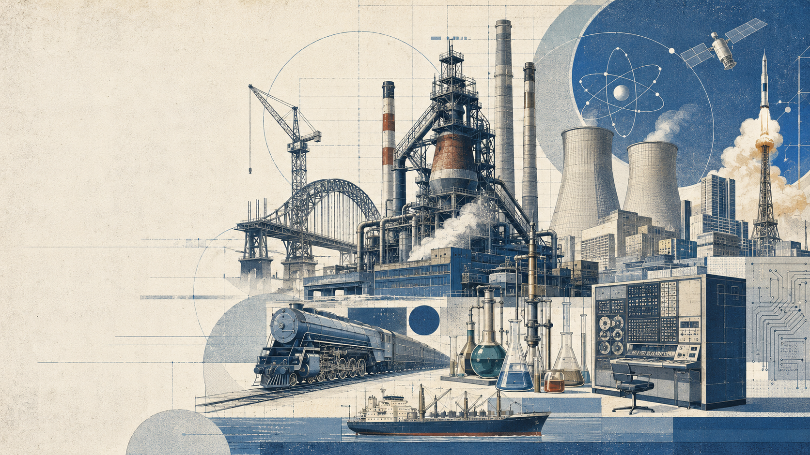
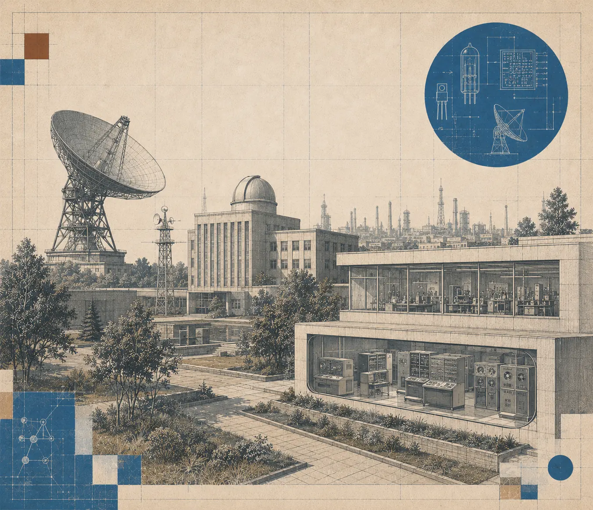
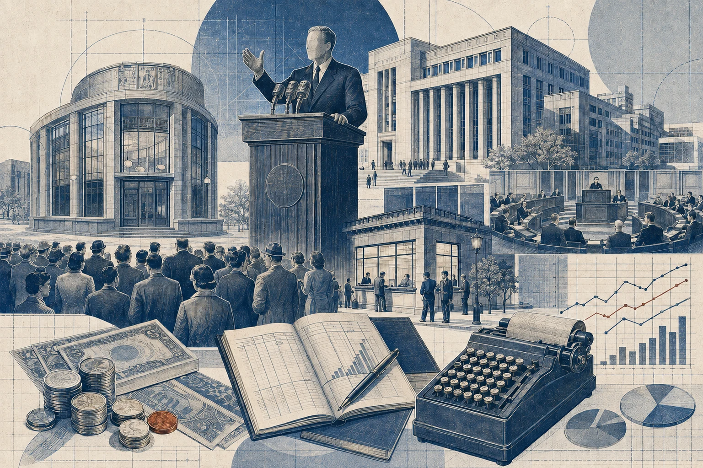
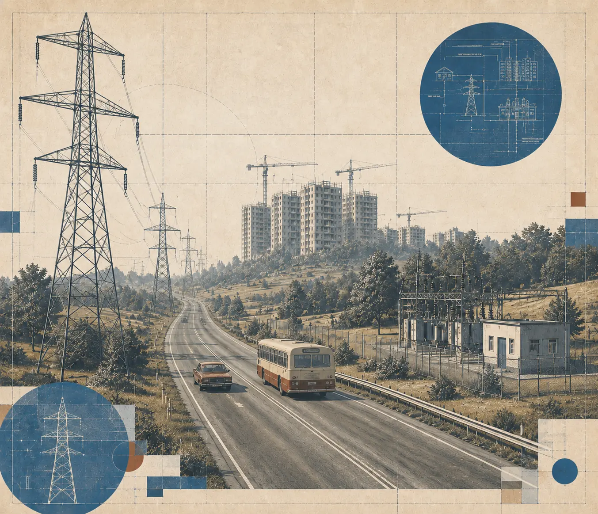
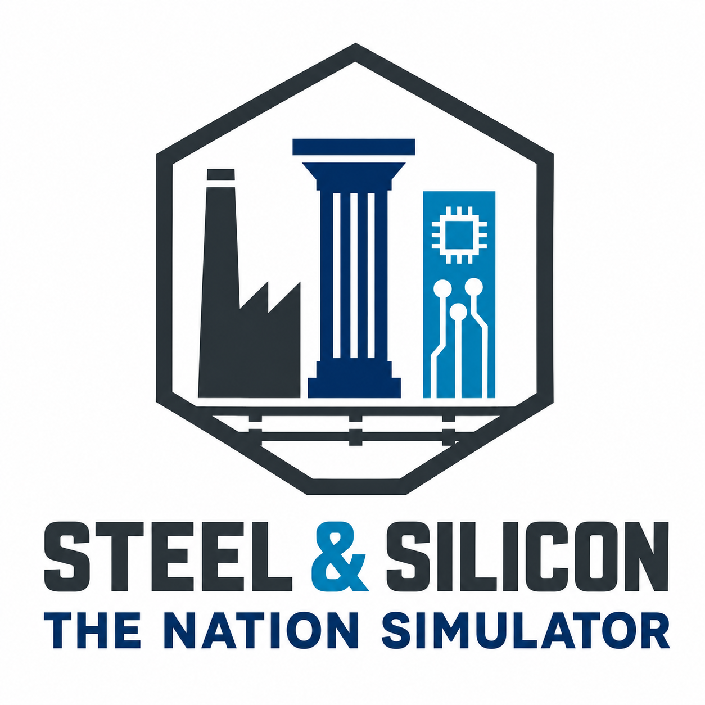

A distinctive concept
An economic and political nation simulator combining the economy, society, technology, and state administration.
The Nation Simulator
Steel & Silicon: The Nation Simulator is a planned nation-management simulation. Take charge of a country in 1946 and guide it through more than seven decades of industrial, social, and technological change.


From post-war reconstruction to the digital age, the state will move from mechanization and mass production to automation and global communications. Oil, gas, and nuclear power will drive industrial growth, while motorization, aviation, and container shipping reshape the world's economic geography.
It will have to build faster, produce more, advance science, modernize infrastructure, restructure the economy, and respond to society's rising expectations. The space race, nuclear industry, computerization, and digital revolution will become not just symbols of their age, but results of the state's ability to turn scientific advances into tangible national development.
A real-world map, economic simulation, and nation management during an era of sweeping social and technological change.

Real geography, a transformative historical era, and interconnected systems create a simulation where government decisions shape the economy, society, and the country's future.
An economic and political nation simulator combining the economy, society, technology, and state administration.
1946–2020: post-war reconstruction, industrialization, nuclear energy, computerization, and the digital revolution.
Around 120 real countries with different resources, political conditions, and opportunities for development.

The economy, industry, population, science, infrastructure, and politics form one interconnected system. Progress in one area inevitably changes the others, and every decision has long-term consequences.
A unified economic system connects businesses, goods, markets, employment, and household consumption.
Extraction, processing, and manufacturing form a single system. The game features 60 goods.
People work, consume goods, move, and place growing demands on their living conditions.
The political system defines the structure of the state, how power is formed, and the scope for reform.
Taxes, the budget, public debt, and government administration form one financial system.
Science raises productivity, unlocks new technologies, and strengthens the state's independence.
Infrastructure connects regions and carries goods, energy, and information.
The state's limited territory is gradually developed for housing, industry, and infrastructure.

The game design is currently taking shape and the first prototype is in preparation. Development news, key decisions, and new project materials will be published on Telegram.
Telegram@SteelSiliconEmailcontact@steelsilicon.com